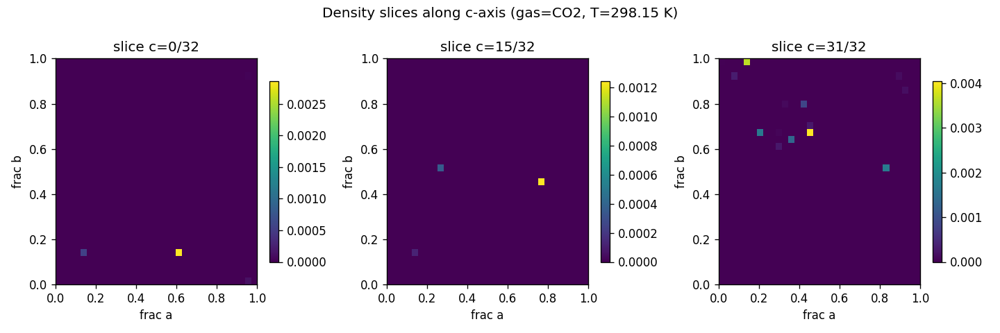
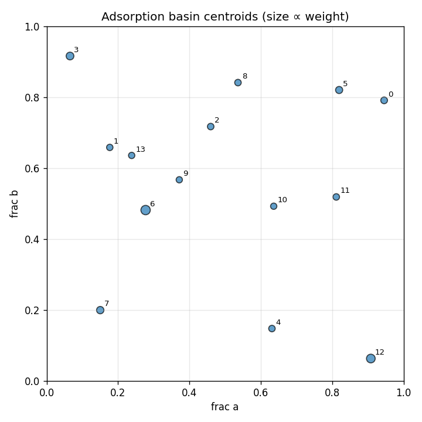

9556a02e4b2b1d5e6a918eb1262d062d58a588dd39b1aae29db4b362a847432b
| basin_id | count | weight | mean_energy_eV | spread_A | accessible_fraction |
|---|---|---|---|---|---|
| 0 | 4 | 0.0387 | -0.2121 | 0.0292 | 1.000 |
| 1 | 14 | 0.0160 | -0.1445 | 1.3338 | 1.000 |
| 2 | 7 | 0.0248 | -0.1775 | 1.2614 | 1.000 |
| 3 | 15 | 0.1150 | -0.2111 | 1.4002 | 1.000 |
| 4 | 17 | 0.0234 | -0.1599 | 1.3274 | 1.000 |
| 5 | 17 | 0.0672 | -0.2174 | 0.6272 | 1.000 |
| 6 | 27 | 0.2648 | -0.2269 | 1.9086 | 1.000 |
| 7 | 29 | 0.0840 | -0.2180 | 0.9632 | 1.000 |
| 8 | 5 | 0.0253 | -0.1898 | 0.3791 | 1.000 |
| 9 | 7 | 0.0093 | -0.1615 | 0.2437 | 1.000 |
| 10 | 9 | 0.0098 | -0.1790 | 0.1144 | 1.000 |
| 11 | 6 | 0.0237 | -0.1926 | 0.5749 | 1.000 |
| 12 | 23 | 0.1984 | -0.2395 | 0.3973 | 1.000 |
| 13 | 1 | 0.0113 | -0.1846 | 0.0000 | 1.000 |

R-3 (#148),
confidence 0.20, members: [0]
R-3 (#148),
confidence 0.20, members: [1]
R-3 (#148),
confidence 0.20, members: [2]
R-3 (#148),
confidence 0.20, members: [3]
R-3 (#148),
confidence 0.20, members: [4]
R-3 (#148),
confidence 0.20, members: [5]
R-3 (#148),
confidence 0.20, members: [6]
R-3 (#148),
confidence 0.20, members: [7]
R-3 (#148),
confidence 0.20, members: [8]
R-3 (#148),
confidence 0.20, members: [9]
R-3 (#148),
confidence 0.20, members: [10]
R-3 (#148),
confidence 0.20, members: [11]
R-3 (#148),
confidence 0.20, members: [12]
R-3 (#148),
confidence 0.20, members: [13]
No perturbations applied to this run.
No robustness comparison run.